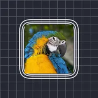

کنٹور لائنز

لیئر کے غیر شفاف حصوں کے گرد آؤٹ لائن حلقے بناتا ہے، اسٹیک شدہ اسٹیکر یا نیون آؤٹ لائنز کے لیے۔
سیٹنگز
| سیٹنگ | قسم | رینج | ڈیفالٹ |
|---|---|---|---|
| رنگ | رنگ | – | #FFFFFF |
| آؤٹ سیٹ | نمبر | 1 سے 300 تک | 20 |
| چوڑائی | نمبر | 0 سے 100 تک | 3 |
| الفا | نمبر | 0% سے 100% تک | 100% |
| فل | نمبر | 0% سے 100% تک | 100% |
| تعداد | نمبر | 1 سے 10 تک | 1 |
| فیز | نمبر | -999 سے 999 تک | 0 |